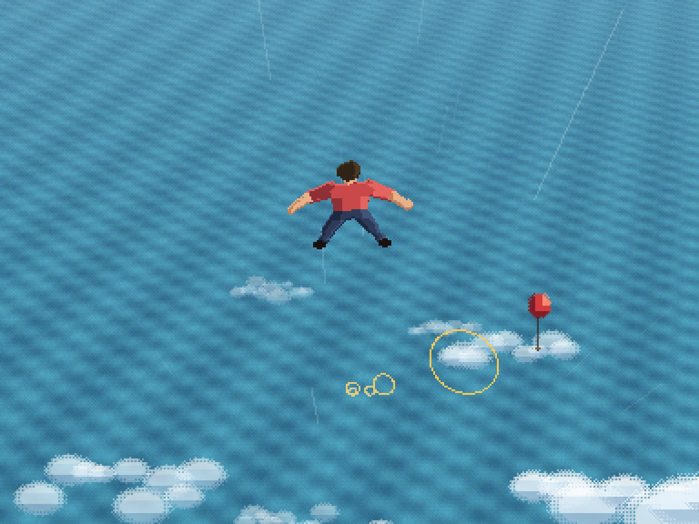
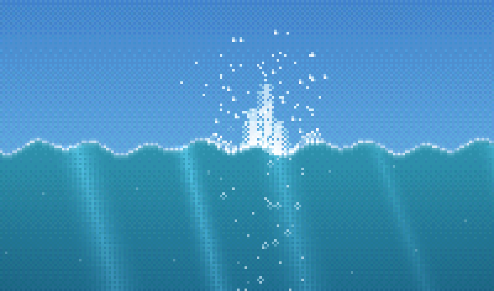
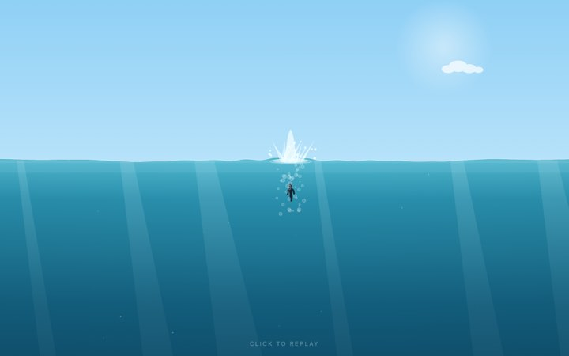
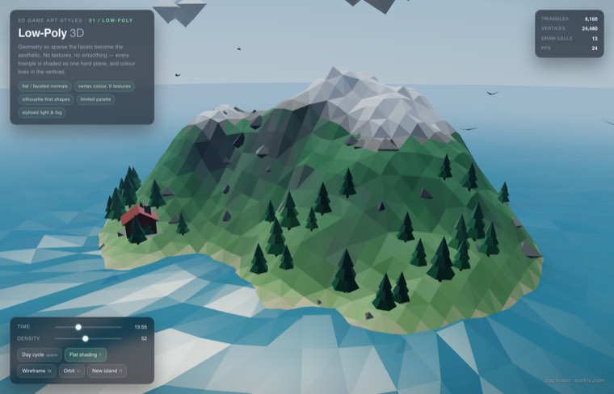
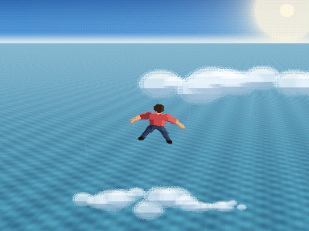

doobki · render tests → a game
Look-development that finally became the thing it was auditioning for. A man falls out of the sky and sinks — rendered as pixel art, as smooth vector, and again in pixel art with the camera behind him — plus a low-poly 3D study, and now the game itself, built on the third-person renderer. Each one is a single HTML file: no build step, no libraries, no network calls.
Views 01–04 are deliberately just visuals — no gameplay, no state, nothing to win. The point was to find out how far the look could be pushed before committing to an engine. View 05 is the commitment.

steer the fall · thread the rings · dodge everything
Fall from 6000 units up with the camera over your shoulder. Steer left and right to thread the gold rings — each one grows the combo — and dodge the birds and balloons that break it, then take the splash. Built on the third-person renderer: same raycast sea, same sprite, but the camera pitches down to show you the course, and eases back to the cinematic framing for the entry.
play ↗
200×300 buffer · ordered dither · slow-mo
Hand-plotted into a 200×300 pixel buffer, one pixel at a time. A skydiver holds an arch, corrects into a feet-first dive, punches a crown of foam out of the surface, and then time drops to a quarter speed while he sinks into the dark. Bayer-dithered gradients, nearest-neighbour sprite rotation.
open ↗
resolution-independent · soft gradients
The same fall with the pixels taken away — flowing gradients, soft light shafts, a crisp silhouette. Useful as a control: it shows which parts of the scene were carried by the composition and which were carried by the pixel-art constraint.
open ↗
WebGL2 · raw GL, no three.js
An art-style study you can take apart: a procedural island with a day/night cycle and toggles for the things that actually make the style — flat vs smooth normals, wireframe, terrain density. Faceted shading comes from screen-space derivatives, so every triangle reads as one hard plane.
open ↗
raycast sea plane · one shared camera
View 01 again from over his shoulder, which turns out to need a different renderer entirely: the water is a per-pixel raycast onto a plane, so it has a horizon, the splash rings come out as ellipses, and he shrinks as he sinks away from you. A 384×288 dithered buffer, with the poses drawn at the size they appear so his pixels are the frame's pixels.
open ↗